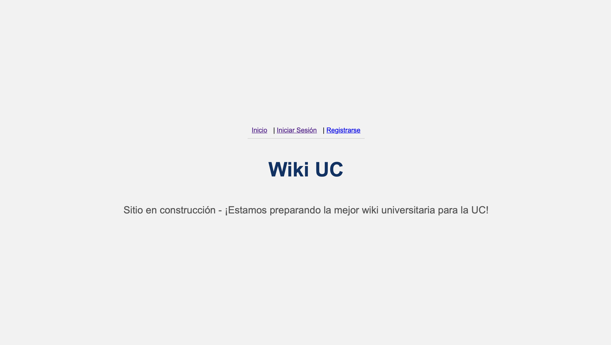
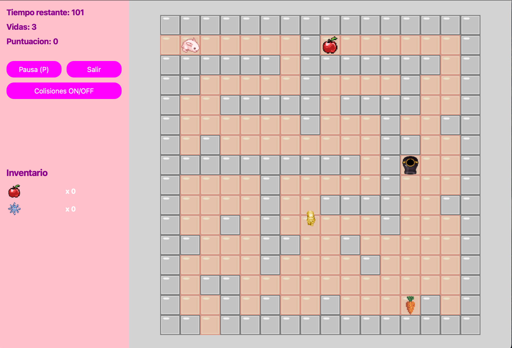

Resolviendo problemas complejos mediante el desarrollo de software funcional y eficiente. Estudiante de Ingeniería de Software en constante aprendizaje y búsqueda de nuevos desafíos técnicos.
Soy estudiante de Ingeniería de Software en la Pontificia Universidad Católica de Chile (PUC), motivado por el desafío de transformar ideas en soluciones de software funcionales y eficientes. Me inclino por el desarrollo de aplicaciones y la resolución de problemas concretos aplicando la tecnología.
Disfruto del aprendizaje continuo y la exploración de nuevas herramientas; actualmente estoy profundizando en el desarrollo web moderno con React. Además, mi experiencia dando clases particulares de matemáticas ha fortalecido mi habilidad para comunicar conceptos complejos de forma clara y efectiva.
2023 - Presente (Esperado 2028)
Estas son algunas de las tecnologías y herramientas con las que he trabajado y estoy aprendiendo:
Aquí presento algunos proyectos en los que he aplicado mis habilidades:

Plataforma tipo foros para discusiones académicas por curso. Como responsable del backend, implementé la lógica principal de la aplicación utilizando Ruby on Rails. Principal desafío: diseñar una estructura de datos flexible.

Juego 2D de laberintos desarrollado íntegramente por mí (Python/PyQt6) con arquitectura cliente-servidor, validación, ranking y protocolo de red seguro personalizado. Reto principal: implementar el protocolo de red desde cero (OOP, sockets).
Además de lo técnico, he desarrollado otras habilidades y participado en diversas actividades:
¿Interesado en conectar, colaborar o discutir oportunidades? Puedes encontrarme en:
O envíame un mensaje directamente usando el formulario: